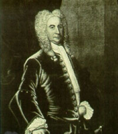

|
by Stefan Bielinski Johannes Schuyler was born in Albany in 1668, youngest of the six sons of Philip Pieterse and Margarita Van Slichtenhorst Schuyler. Johannes grew up in the new family home on State Street and on the farm at the Flats. Although Philip Pieterse died when the boy was just fifteen, his  father was able to establish three of his sons in advantageous business situations beyond Albany. Eldest son Pieter Schuyler succeeded in his father's Albany-based enterprises. Young Johannes was able to follow in the Albany setting as well. Few New Netherland families were able to place their children so well. Residing with his widowed mother, Johannes Schuyler grew into adulthood. An accomplished fur trader who often went into the Indian country, he learned business and the responsibilities of landholding. Beginning in 1690, held militia commissions - where as Captain and Colonel he served Albany interests long and well. In April 1695, he married the widow Elsie Staats Wendell - already the mother of eleven children. Marriage to the daughter and widow of two of early Albany's foremost families was not surprising. However, Johannes was twenty-seven and his bride a decade older. In addition, Elsie was expecting and would give birth to the first of their four children just eight months later. This union of an older women to a much younger man is without parallel in early Albany history. Johannes moved into his wife's home on State Street and was elected to the city council in 1695. He would hold the first ward aldermanic seat for much of the next two decades. His trading experience made him one of the more active members of the Commissioners of Indian Affairs. As late as 1737, he was sent into the Onondaga country on a diplomatic mission. In 1703, this city father was appointed mayor of Albany. Re-appointed three more times, he served until 1706. In 1710, he was elected to represent Albany County in the provincial Assembly - where served until 1713. During this time, he retained his seat on the common council. Assessment rolls for the early 1700s show Johannes Schuyler to be one of the wealthiest Albany traders. He was a supporter and deacon of the Albany Dutch Church and the godfather of many Albany children. Like many Albany leaders, he was able to acquire extensive frontier acreage and administered his mother's lands as well. During the three decades of peace and development (1713-44), he was able to establish mills on some of those properties and engage tenants to begin to tap farm and forest potentials.
Having outlived all of his siblings, by the 1730s this onetime youngest son became patriarch of the Schuyler family - watching as children, Wendell stepchildren, and grandchildren succeeded to places of prominence and leadership in Albany and beyond. His wife died in 1737. He made his will in 1742. City father, military leader, Indian diplomat and frontier developer, Johannes Schuyler's long career spanned Albany's transition from outpost to entrepot. He died in February 1747 - a year shy of his eightieth birthday.
This portrait of Johannes Schuyler has been sewn together with a portrait of his wife. It has been widely reproduced and is in the collection of the New-York Historical Society This unusual double painting was painted prior to Elsie’s death in 1737. Both portraits probably were done by Scottish-born artist John Watson. In 1741, the double portrait was noted in Johannes Schuyler's will. Between 1692 and 1731, Johannes Schuyler witnessed twenty-seven baptisms in the Schuyler, Staats, and Wendell families, and of other Albany children as well.
|
{kind=link}